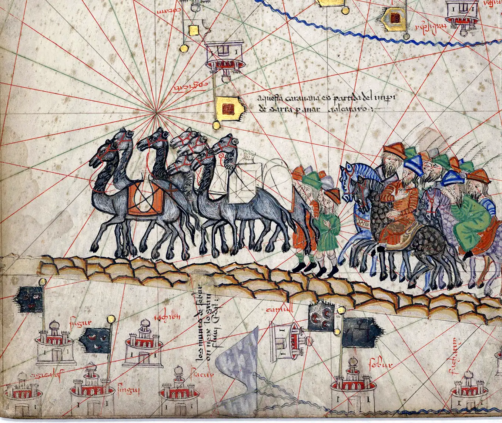
HIST 270 · History of China · Chapter 12 · Lecture 2
The Yuan Sorted Its People by Origin While Goods and Ideas Crossed Eurasia
1260s–1350s · Ranks, registers, roads and blue-and-white · Study Buddy edition
A caravan bound for Cathay, detail of the Catalan Atlas, Majorca, 1375, attributed to Abraham Cresques. Bibliothèque nationale de France. Public domain, Wikimedia Commons.
The puzzle · 1287 and 1345
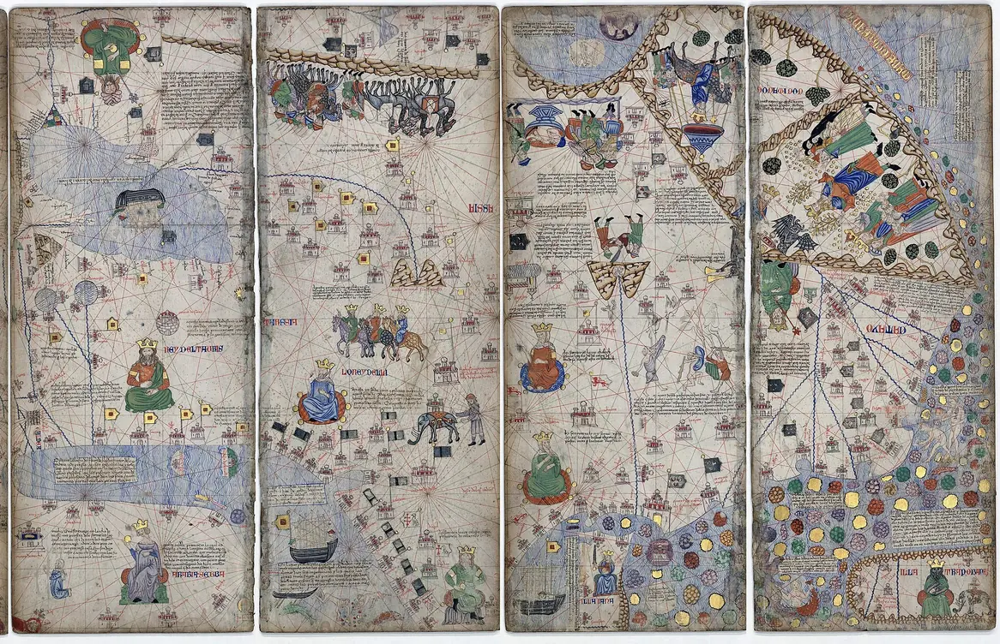
The puzzle: how could one government keep people in fixed places at home while moving people, money and goods across a continent?
How to use this deck
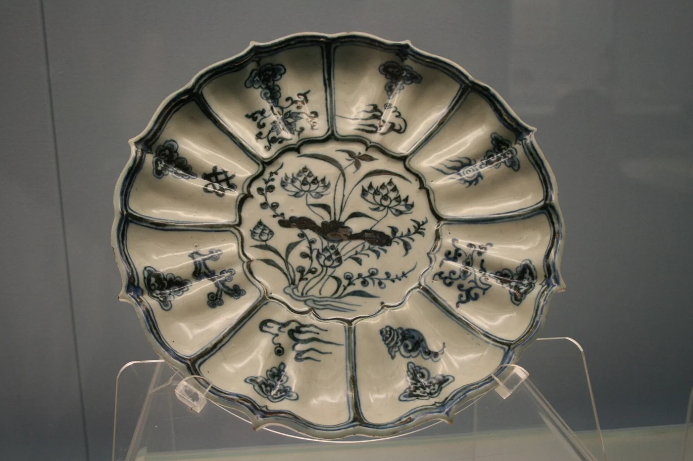
To make blue-and-white, a painter brushed a cobalt pigment onto the unfired white clay. A clear glaze went on top, and one hot firing turned the cobalt deep blue under a glassy skin.
Because the blue sits under the glaze, it does not wear off with use. That made the ware practical as well as beautiful.
Popups like this one close with Esc, the × mark, or a click outside the card.
Q5 story · The problem of numbers
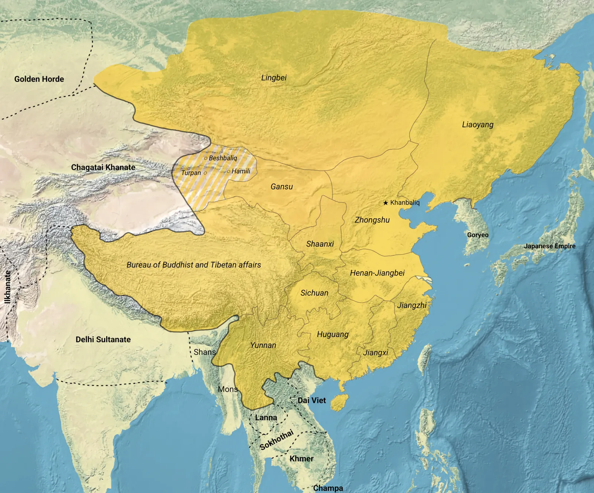
people in about 13 million households appear in the Yuan count of 1290, and many more were never registered.
Q5 story · Four labels
Mongols shall serve as the darughachi of every circuit, Han as the governors, and Muslims as the associate governors. Let this be a permanent rule.Order of 1265 recorded in Khubilai's annals, Yuan shi ch. 6. Translated for this deck. Note that it names Muslims, not the broader label semu.
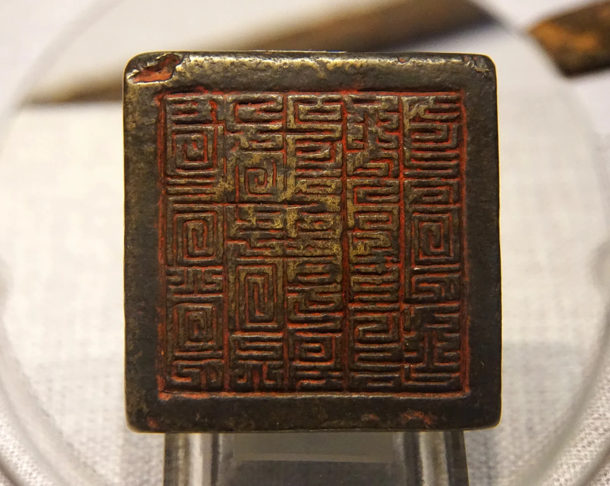
Semu literally means "various kinds" or "assorted categories." It was a catch-all for peoples who were neither Mongol nor Chinese, mostly from Central and West Asia.
The historian Funada Yoshiyuki points out that the term appears in Chinese-language sources, not in Mongolian or Persian ones. He argues that it was an administrative label for people governed by their own customs rather than by Chinese law.
In Yuan usage, Hanren did not simply mean "ethnic Chinese." It covered most people of the old Jin realm in North China: Chinese, but also Khitans, Jurchens and some Koreans.
A late Yuan scholar, Tao Zongyi, listed eight kinds of Hanren and more than thirty kinds of semu. His lists repeat and overlap, which suggests that even educated people of the time did not share one precise definition.
Nanren meant people of the lands conquered from the Southern Song in the 1270s. Mongols sometimes called them Manzi, a slighting term that Marco Polo also used for South China.
Southerners were the most numerous group and included the richest landlords and the most famous scholars in the empire.
Q5 story · The labels in law
When a Mongol quarrels with a Han and strikes him, the Han must not strike back. He may bring a complaint to the authorities.Yuan legal provision preserved in the law treatise of the Yuan shi, ch. 105. Translated for this deck.
A Mongol who kills a Han in a quarrel or while drunk shall be sentenced to military service on campaign and pay the full burial money.Same treatise. Its general rule in the same section is that whoever kills a person shall die.
Han who carry weapons are forbidden to do so. Han who serve as soldiers are not.Same treatise, from its section on prohibitions.
About the source. The law treatise is a Ming summary of Yuan codes. It tells us what rules said, not how often courts enforced them.
The Yuan shi was written in 1369–1370 by scholars working for the new Ming dynasty. Its treatise on punishments condenses Yuan legal collections into short rules.
That makes it a valuable record of what Yuan law said. It does not tell us how many cases were tried, or whether local officials applied the rules evenly. Ming writers also had reasons to make Mongol rule look harsh.
Q5 story · Historians disagree
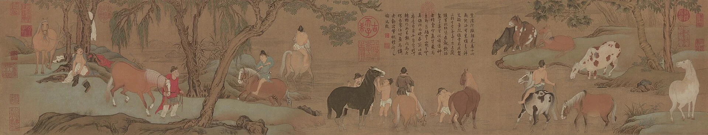
A fair summary: the labels were real and could hurt, but they worked through specific rules, and wealth, office, registration and personal ties often mattered as much.
A descendant of the Song imperial family, Zhao was recruited to serve Khubilai in 1286. He rose to high honorary posts and became the most admired painter and calligrapher of his age.
Some later critics condemned him for serving the conquerors. You will meet him again in Lecture 3.
Q5 story · Hereditary households
Two different systems. The four labels sorted people by origin. Household registers sorted them by duty, and every group had them.
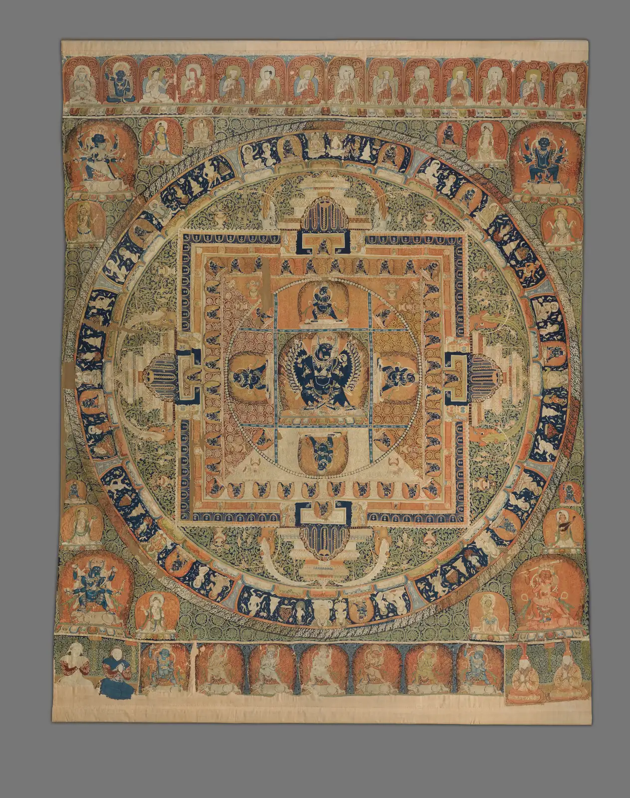
A military household had to supply a soldier, and often his equipment, whenever called. If the soldier died, the family sent another son.
There were Mongol, semu and Chinese military households. The Ming dynasty kept this hereditary system after 1368.
During the conquests, Mongol armies often spared skilled craftsmen and moved them to new workshops. Under the Yuan, their families were registered as artisan households and owed work to government or princely workshops.
Many lived poorly and tried to escape the register, but the system gave the court a steady supply of luxury goods.
Confucian households were scholar families recognized by the state. They were excused from many labor services, and their sons were expected to keep studying.
In the north, many families won this status through a test held in 1238. Registration protected scholars even when there were no regular civil service examinations.
Yuan documents use the phrase zhuse huji for the many kinds of registered households. Besides ordinary farmers, they included military, relay-station, artisan, Confucian, medical, salt-making, hunting and falconry, and boat households.
There were also registers for Buddhist monks, Daoists, Christian clergy, Muslim clergy and ortogh merchants.
Q5 story · A famous saying, checked
A great wit, mocking Confucians, said: "Under the statutes of our Great Yuan, people come in ten grades. First officials, second clerks. Seventh artisans, eighth prostitutes, ninth Confucians, tenth beggars."Xie Fangde, a Song loyalist who refused to serve the Yuan, in a farewell preface dated 1288. Translated for this deck.
The real grievance was loss of status and office for scholars, especially in the south. That story belongs to Lecture 3.
This anti-Mongol text is credited to the Song loyalist Zheng Sixiao. It was supposedly sealed in an iron box, sunk in a well in Suzhou, and found in 1638, near the end of the Ming dynasty.
Several Qing scholars already suspected it was a late Ming forgery. Use anything quoted from it with care.
Q5 story · Semu financiers · 1262–1282
Wang Zhu was right to kill him.Khubilai, as reported in Ahmad's biography in the Yuan shi, ch. 205, which places him among the "treacherous ministers." Translated for this deck.
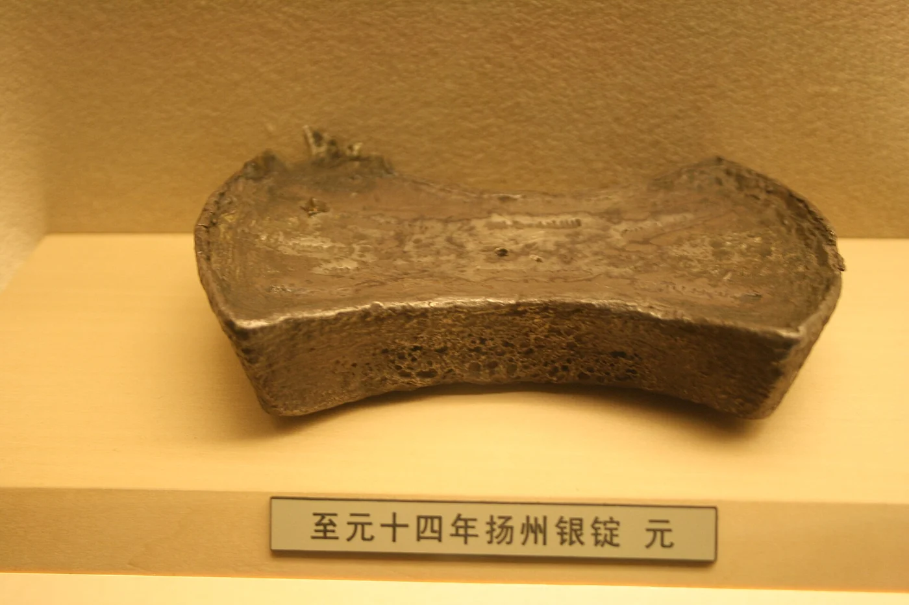
Hostile sources. Nearly everything we know about Ahmad comes from his enemies. Read the charges as accusations.
The Yuan shi was written by Confucian scholars of the early Ming, who disliked "profit-seeking" ministers and placed Ahmad among the "treacherous ministers". A long account of the murder in Marco Polo's book appears only in Ramusio's Italian edition of 1559, and it says the Chinese hated being ruled by "Saracens."
The Persian historian Rashid al-Din also describes the affair. All of these writers had reasons to tell it their way.
Q5 story · One script for the state · 1269
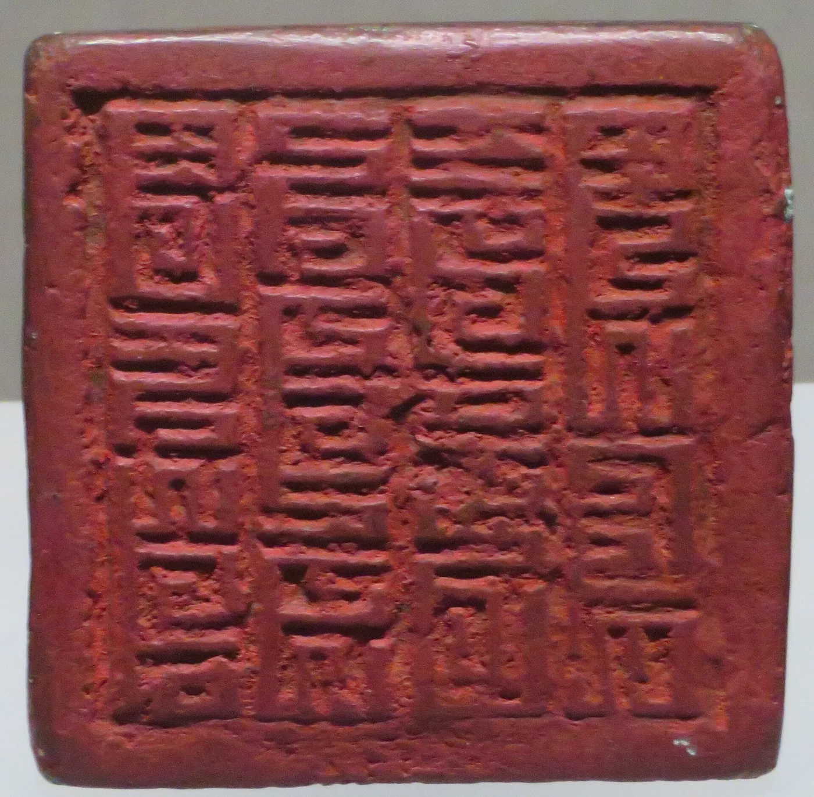
This seal is a small picture of Yuan rule: a Chinese title, written in a Tibetan-based script, for a Mongol state.
Phags-pa was a leader of the Sakya school of Tibetan Buddhism. Khubilai made him his imperial preceptor, the chief Buddhist cleric of the realm, and gave him authority over Buddhist affairs and Tibet.
The script named after him is sometimes called the "square script" because of its blocky letters.
Your Turn · Review Question 5
Review Question 5
Social and Ethnic Hierarchies in the Yuan Dynasty
Analyze the rigid social stratification established by the Mongols. How did the four-grade ethnic classification system and hereditary occupational categories serve Mongol interests while subjugating the Chinese?
Open the Reading Guide ↗Use the stories you just studied, then check your reading for the passage that answers this question.
Q8 story · Feeding the capital · 1280s–1290s
Scale. The Yuan shi reports more than three million shi of grain carried by sea in peak years, though storms sank many ships.
Fleets loaded tax rice near the Yangzi mouth and sailed north along the coast to Zhigu, near modern Tianjin. From there the grain went on to Dadu.
The sea route was faster and cheaper than the canal, but much riskier. Zhu Qing and Zhang Xuan grew enormously rich and were brought down in 1303.
Q8 story · The great port · Zaytun
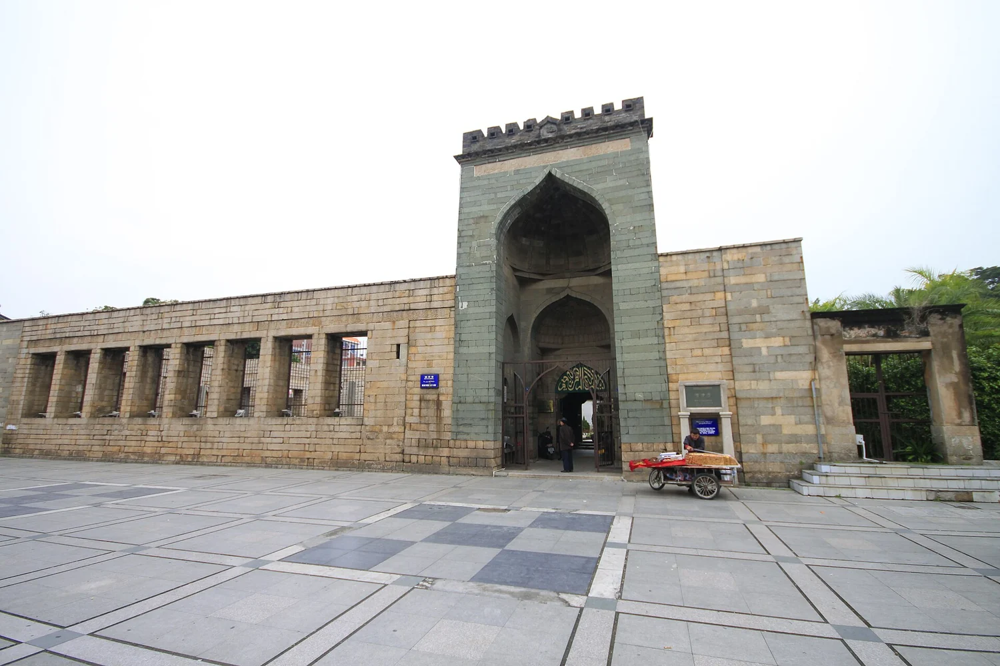
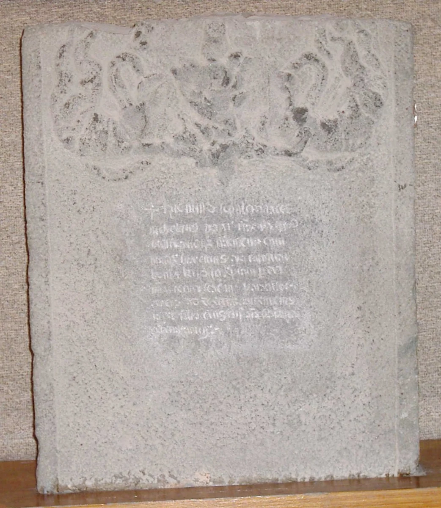
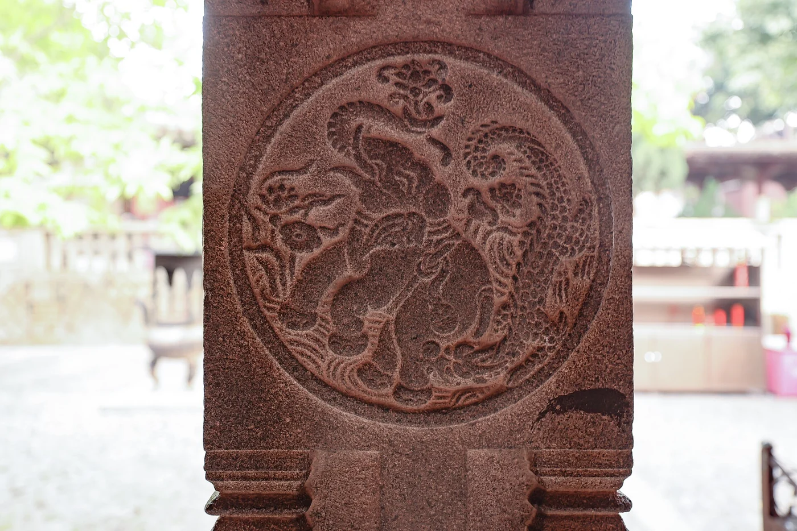
For one shipload of pepper that goes to Alexandria or elsewhere, destined for Christendom, there come a hundred such, aye and more too, to this haven of Zayton.Marco Polo's book, tr. Henry Yule. Polo wanted to astonish European readers, and his reliability is debated.
Polo's book was written down in prison in 1298 by a romance writer, Rustichello of Pisa, and copied in many different versions. Frances Wood has argued that Polo may never have reached China.
Most specialists think he did, because many details about Yuan salt, money and officials check out. But his numbers are often round and boastful. Use him as a vivid witness, not a statistician.
Q8 story · From Dadu to Rome · 1270s–1294
The Church of the East was an Asian Christian church with its own patriarch, based in Iraq and Iran. It used Syriac in its services. Europeans often called it "Nestorian."
It had communities across Central Asia and among some Mongol and Turkic peoples, including the Öngüt and Kerait. Several Mongol princesses were Christians of this church.
Q8 story · A Moroccan in China · c. 1345
The harbour of Zaitun is one of the greatest in the world. I am wrong: it is the greatest! I have seen there about one hundred first-class junks together.Ibn Battuta's Rihla, dictated in Morocco in 1355, tr. Henry Yule.
Their buying and selling is carried on exclusively by means of pieces of paper, each of the size of the palm of the hand, and stamped with the sultan's seal.Same work, tr. H. A. R. Gibb. He adds that no shop would take a gold or silver coin until it was changed for paper.
Ibn Battuta dictated his book years later to a scribe, Ibn Juzayy, who polished it and borrowed some passages from older travel books.
His description of the coast fits other evidence well. His trip to Khanbaliq (Dadu) is more doubtful: he reports that the emperor was killed fighting a rebel relative, and no such event happened in the 1340s.
Q8 story · Persian blue, Chinese clay
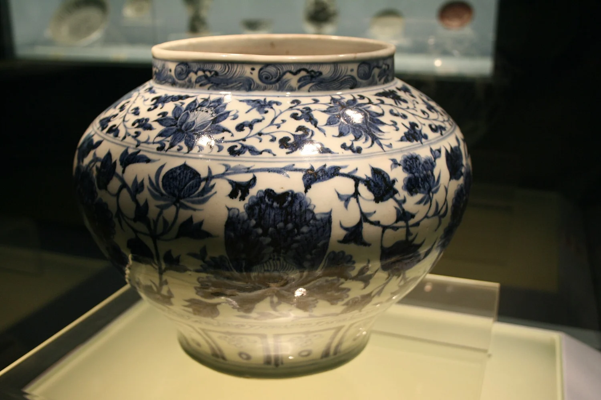
Not instant fame at home. A Chinese connoisseur's guide of 1388 still called the new blue-painted wares "very vulgar."
Jingdezhen lay in Fuliang county. The Yuan shi records that a Fuliang Porcelain Bureau was set up in 1278 to supervise production for the court.
Most kilns were still private workshops. They made wares for the court, for Chinese buyers, and increasingly for export.
Cobalt oxide turns blue when fired. Laboratory studies find that most Yuan blue is rich in iron and low in manganese, which matches ores from Iran better than most Chinese ores. Exact sources are still debated.
A Persian treatise on pottery written in 1301 by Abu'l-Qasim Kashani describes cobalt mined near Kashan. Later Chinese texts call imported cobalt "Muslim blue."
Q8 story · Made for West Asian buyers
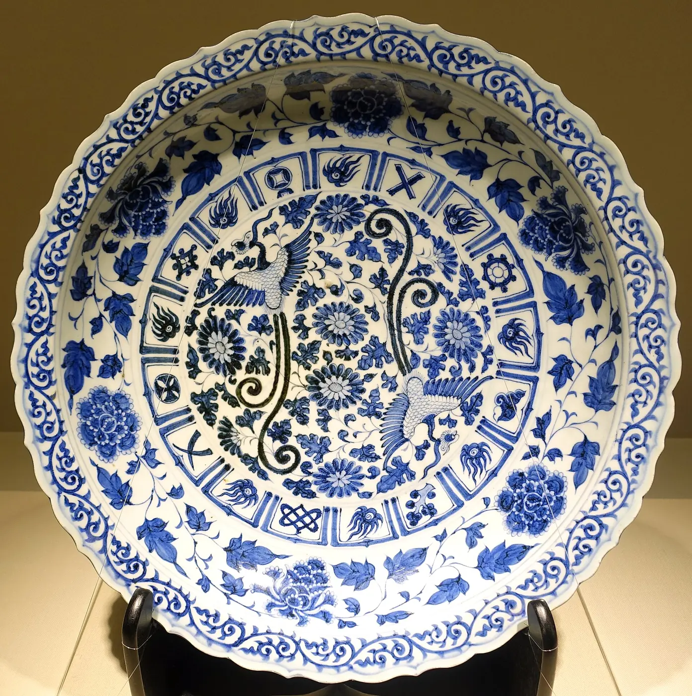
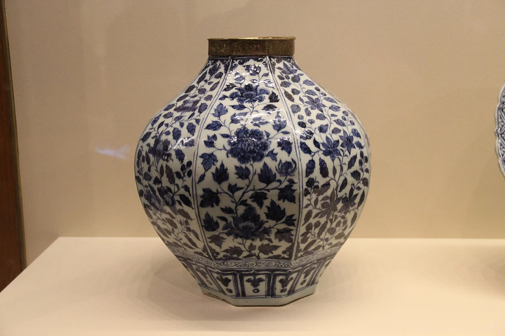
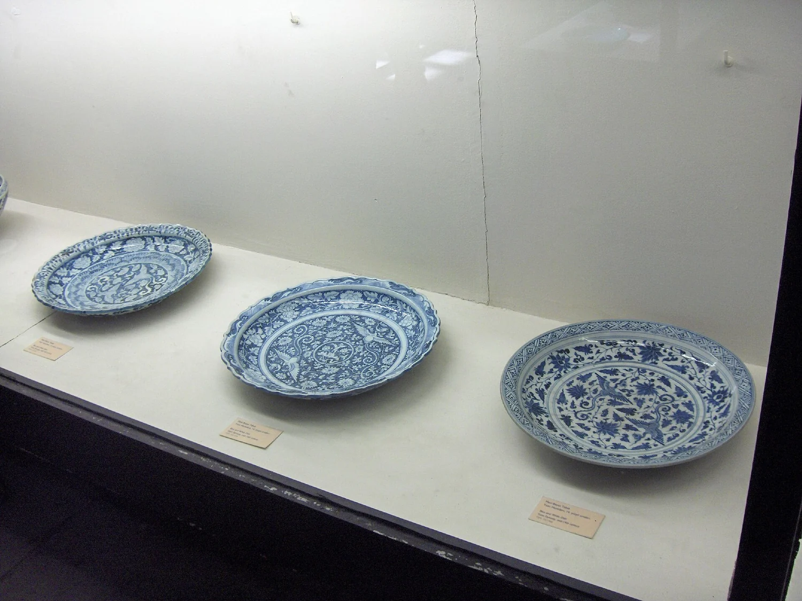
It is exported to India and other countries, even reaching as far as our own lands in the West.Ibn Battuta on Chinese porcelain, tr. Gibb. He wrongly thought it was made only near the ports.
In the early 1600s the Safavid ruler Shah Abbas I gave his Chinese porcelain to the shrine of Sheikh Safi al-Din at Ardabil, in northwest Iran. Most of the surviving pieces are now in the National Museum of Iran.
The gift came long after the Yuan, so the collection shows that Yuan pieces were treasured in Iran for centuries. It does not show exactly when each piece arrived.
Long after the Yuan, Ottoman sultans gathered more than ten thousand Chinese ceramics through purchase, gifts and war booty. The collection is kept today at Topkapı Palace in Istanbul. A few dozen are Yuan blue-and-white.
In the 1950s the American scholar John Alexander Pope compared Topkapı and Ardabil pieces with the dated David Vases to work out which ones were Yuan.
Q8 story · A dated pair · 1351
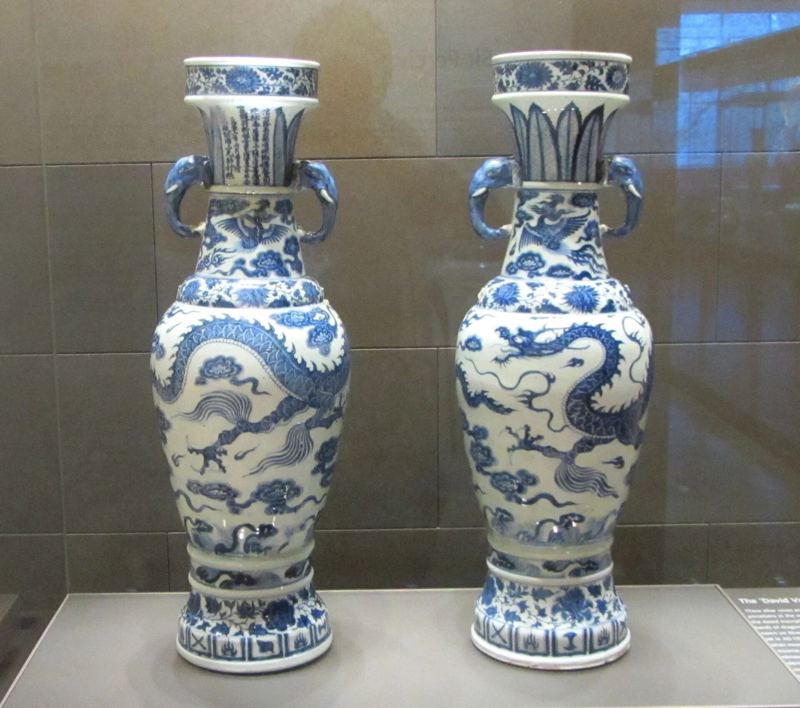
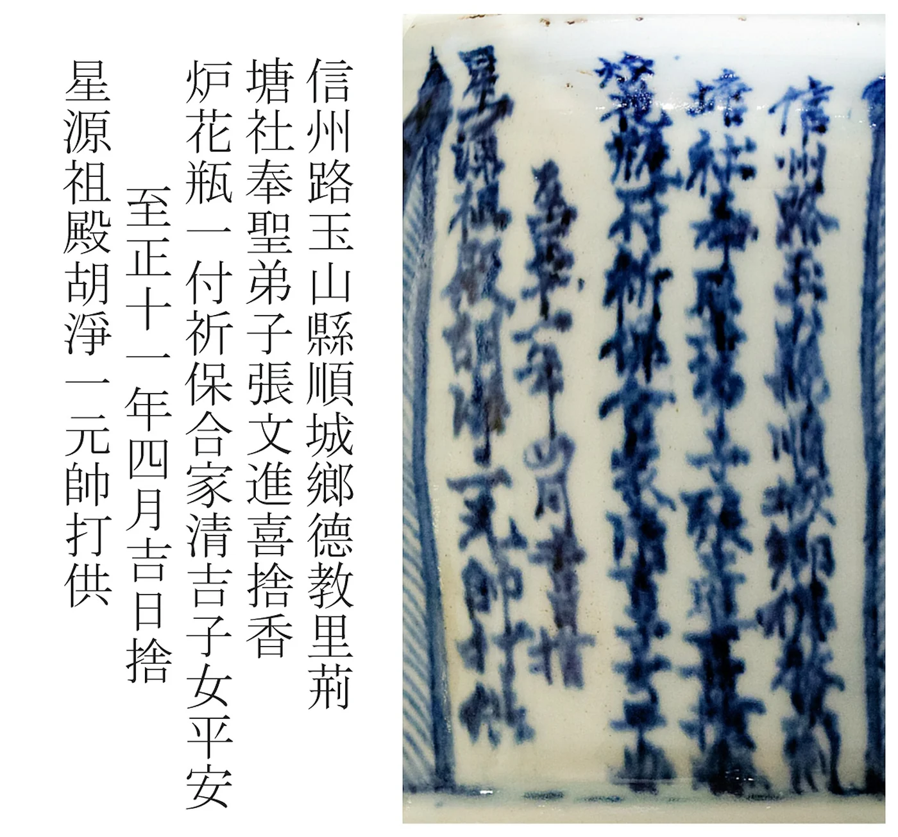
Zhang Wenjin, a disciple of the gods, gladly offers an incense burner and a pair of flower vases, praying for the peace of his whole family. The fourth month of Zhizheng 11.Inscription on the vases, shortened and adapted from the British Museum's translation.
Why it matters. Few Yuan pieces carry a date, so experts compare others with these two.
Before the 1950s, many collectors assumed that fine blue-and-white began in the Ming dynasty. The dated David Vases proved that mature blue-and-white existed by 1351.
John Alexander Pope used them to pick out a "fourteenth-century style" in the Topkapı and Ardabil collections. Pieces that match their painting and shapes are now called Yuan.
Q8 story · Measuring the sky · 1267–1281
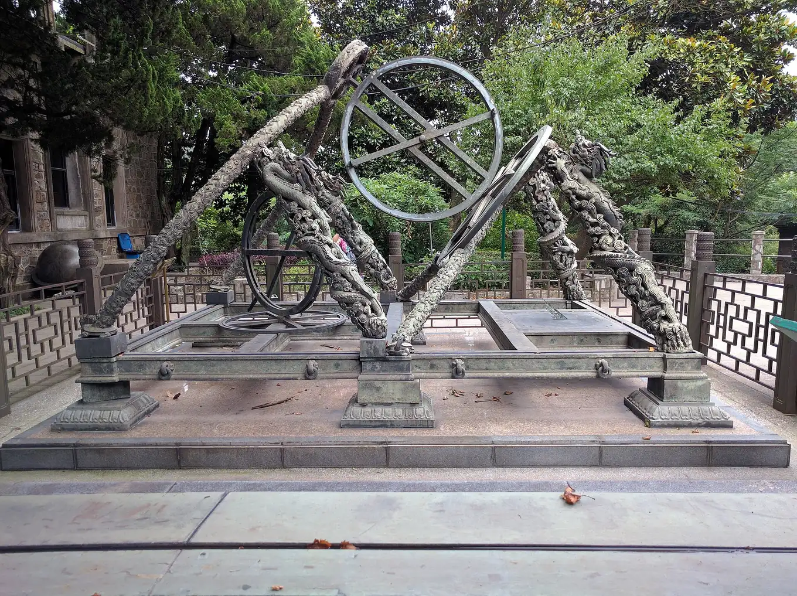
Borrowing or parallel work? Historians debate how much Guo learned from the Persian instruments. His methods and calendar were mostly Chinese in design.
A Persian astronomer who probably had ties to the great Ilkhanid observatory at Maragha in Iran. The Yuan shi lists his seven "Western Region" instruments, including an armillary sphere, a globe of the earth and an astrolabe.
He also helped compile a geography of the whole empire.
The name means "Granting the Seasons." It set the year at 365.2425 days, the same value as the Gregorian calendar adopted in Europe in 1582.
The Ming dynasty kept it, with small changes, under the name Datong calendar.
Q8 story · Doctors and historians · 1270–1318
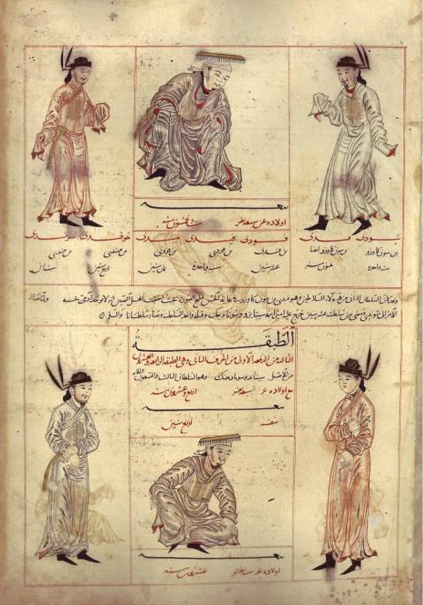
The Yuan shi records this office, founded in 1270, as responsible for "Muslim medicines" for the palace and the imperial guards. Muslim pharmacies were later set up in the two capitals.
A Chinese-language collection called Muslim Prescriptions (Huihui yaofang), which survives only in part, is full of Arabic and Persian drug names.
Your Turn · Review Question 8
Review Question 8
Cultural Synthesis: Blue-and-White Porcelain
Using the development of blue-and-white porcelain as a case study, explain how the Mongol Empire's vast Eurasian networks influenced Chinese material culture and international trade.
Open the Reading Guide ↗Use the stories you just studied, then check your reading for the passage that answers this question.
Coming next · Lecture 3
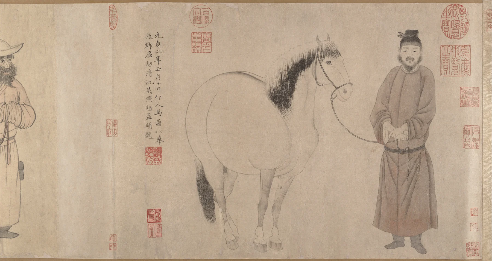
Carry this question forward: how did the labels and registers from this lecture shape what Chinese scholars could do with their lives?
Sources and image credits
Background essay: the historians' debates behind this lecture ↗